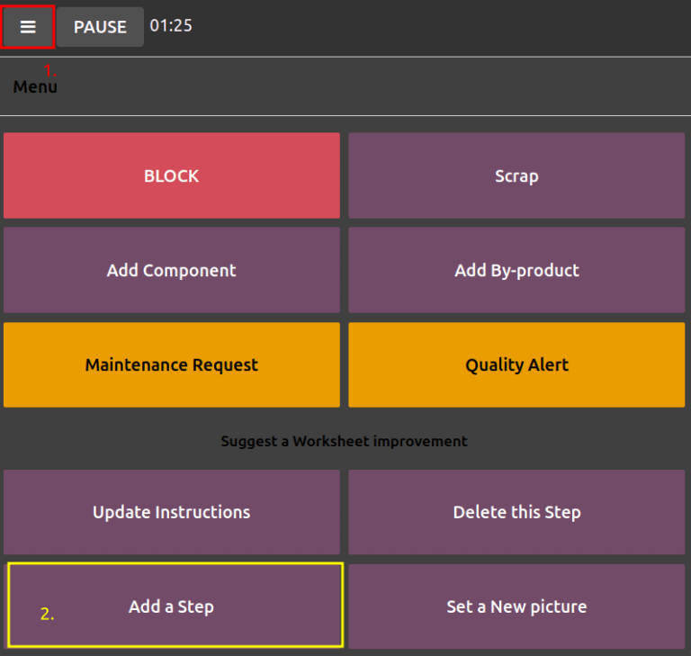

Engineering change orders¶
Utilize engineering change orders (ECOs) to track, implement, and revert change versions made to products, and bills of materials.
Engineering change orders can be created:
by an operator in the tablet view of an operation.
automatically from feedback submitted to the ECO type’s email alias.
Create ECO¶
To create a new ECO, begin by navigating to the PLM app. Then, select the ECO type card that will be used to track the progress of the change. On the Engineering Change Orders page, click the New button in the top-left corner.
Note
Learn how to create new ECO types to categorize and organize change orders. Doing so ensures employees only view the ECOs related to their responsibilities, whether it involves new product introductions, targeted product line updates, or regulatory compliance fulfillment.
On the ECO form, fill in the following fields accordingly:
Description is a brief summary of the improvement.
Type: specifies the ECO type project for organizing the ECOs.
Apply on determines if the ECO changes the Bill of Materials or the Product Only.
Product indicates the product being improved.
Bill of Materials specifies the changed BoM. It auto-populates if the product in Product field has an existing BoM. If multiple BoMs exist, select the intended radio options from the drop-down menu.
Company field is used in multi-company databases. Specify if the change applies to products in a specific company, or leave blank if the change applies to all companies.
Responsible represents the assignee in charge of this ECO. (Optional)
Effective specifies when the ECO becomes live. Choosing As soon as possible means the ECO applies to the production BoM as soon as an authorized user applies the changes.
On the other hand, choosing At Date, and setting a specific date, leaves a date that makes it easier to track the version history of the BoM, and the specific date BoMs, used for production.
Tags are assigned to ECOs for prioritization and organization. Create a new tag by typing the name in the field and selecting Create from the drop-down menu. (Optional)
After filling out the ECO form, click the Start Revision button to begin implementing the changes.
By pressing Start Revision, three actions occur:
The Documents smart button appears, storing relevant files of the BoM.
A copy of the production BoM is stored in the newly-appeared Revision smart button of the ECO. The next available version number (e.g.,
V2,V3, …) is also assigned to keep track of all BoM versions.The stages of the ECO Type are displayed in the top-right corner of the ECO.
Note
The Revision smart button is available only when the Bill of Materials radio button is selected in the Apply on field, and the Start Revision button has been pressed.

Change components¶
To modify the components in a BoM, click the Revision smart button on an ECO to access the new version of the BoM. Odoo distinguishes the non-production version of the BoM from the current version, by flagging the test BoM with a large Archived tag.
Example
After clicking the Start Revision button for an ECO for the product, [D_0045
Stool], make changes to the product’s BoM by clicking the Revision smart button.
Doing so opens the archived BoM, marked with a large red Archived flag.

On the new BoM, in the Components tab, proceed to modify the components list, by changing the Quantity of existing components, adding new components using the Add a line button, and removing components with the 🗑️ (trash) icon.
Example
In version two of the BoM for a keyboard, the component quantities are reduced, and an
additional component, Stabilizers, is added.

Compare changes¶
Once the changes are complete, navigate back to the ECO, by clicking ECO00X in the breadcrumbs
located in the top-left corner. On the ECO form, a new BoM Changes tab displays the
differences between the current BoM and the new version.
Blue text indicates new components added to the revised BoM that are not in the production BoM. Black text represents updates shared by both BoMs, while red text indicates components removed in the revised BoM.
Changes and tests are encapsulated in the revised BoM, and do not affect the BoM currently used in production. That is, until the changes are applied.
Example
View the summary of the differences between the current and revised keyboard BoMs in the BoM Changes tab of the ECO.

Change operations¶
To modify the operations in a BoM, click the Revision smart button on an ECO to access the archived, new version of the BoM.
In the new BoM version, switch to the Operations tab to view and edit BoM operations. To make changes, select each operation, which opens the corresponding Open: Operations pop-up window.
Note
The Operations tab is not available by default. To enable it, navigate to , and check the Work Orders box.
Make changes to any of the fields in the Open: Operations pop-up window, then click Save once completed.
Create new operations by clicking the Add a line button, and remove new operations by clicking the Archive Operation button.
Compare changes¶
Once the changes are complete, navigate back to the ECO, by clicking ECO00X in the breadcrumbs
located in the top-left corner.
On the ECO form, a new Operation Changes tab displays the differences between the current production BoM and the new version.
Blue text indicates new operations added to the revised BoM that do not yet exist in the production BoM. Black text represents updates shared by both BoMs, while red text indicates operations removed in the revised BoM.
Modifications to the BoM in an ECO will not affect the BoM used in production. That is, until the changes are applied.
In the Operation Changes tab, each row of details, beneath the columns in the table, reflect the following information:
Operation: Name of the operation that was modified.
Step: specifies the quality control point, visible when the operation includes detailed instructions.
Note
To check for instructions, click the operation line item in the Operations tab of a BoM. Then, in the Open: Operations pop-up window, look for the Instructions smart button displayed at the top.
Example
The Assembly Operation includes 10 detailed Instructions to complete
it.

Step Type details the type of quality control for further instructions in the operation.
Type corresponds with the colored text to specify how the revised BoM differs from the production BoM. Operation change types can be Add, Remove, or Update.
Work Center specifies the work center at which the operation is performed.
Manual Duration Change refers to the change in the Default Duration field in the Open: Operations pop-up window, which specifies the expected time for completing the operation.
Example
The Operation Changes tab compares the production BoM with the revised BoM in the ECO.
In the revised BoM, a new Assembly Operation at the Work Center
Assembly Line 1 is added. In addition, the expected duration of the operation is 20.00
minutes, as specified by the Manual Duration Change.
To supplement the Assembly operation, two quality control point instructions are added:
The first is the Step
QCP00039, a Step Type to Register Production of components.The second Step is
QCP00034, anInstructionsStep Type that provides additional assembly details.

Apply changes¶
After verifying the changes, move the ECO to a verification stage, which are stages that require approval before the revised changes can be applied to the production BoM.
Once the approvers accept the changes, the Apply Changes button becomes available. Click this button, and the ECO is automatically moved to a closing stage. The changes are applied, which archives the original production BoM, and the revised BoM becomes the new production BoM.
Verify changes¶
To ensure the changes are live, from the ECO where the Apply Changes button was just pressed, return to the revised BoM by clicking the Revision smart button.
On the revised BoM, the large red Archived flag is removed.
To further verify the changes, check the production BoM by going to and select the product.
Then, on the product form, click the Bill of Materials smart button, and select the BoM from the list. In the Miscellaneous tab of the BoM, the Version field is updated to match the version number shown on the Revision smart button of the latest ECO.
Example
After applying the changes of the ECO for the keyboard, view
the version of the current keyboard BoM in the Miscellaneous tab. Here, the
Version number has been updated to 2, matching the V2 that appears in the
Revision smart button of the ECO.

Create ECO from tablet view¶
Operators can directly suggest clearer operation instructions, while performing manufacturing orders (MOs) in the Manufacturing app.
To create ECOs in this manner, begin by navigating to . Then, select the desired MO and switch to the Work Orders tab. Then, click the 📱 (mobile phone) icon for the desired work order to open the tablet view of the operation.
Important
The 📱 (mobile phone) icon is only available for MOs with a Confirmed or In Progress status.
Next, add an instructional step, by clicking the ☰ (three horizontal lines) icon in the tablet view of an operation. Doing so opens the Menu of action items for a MO. Then, click the Add a step button.
Clicking the button reveals an Add a step pop-up window, where the proposed changes are submitted.
In the Title field, enter a short step description. Next, in the Instruction text field, type the instructions of the step in greater detail. Optionally, add an image to the Document field. Once completed, finish by clicking the Propose Change button.
Example
To propose an additional check for broken components, enter the details in the Add a Step pop-up window. Doing so creates an instructional quality control point that will be reviewed in the following section.

Based on the inputs from the Add a Step pop-up window, an ECO is created with the following information:
Description is the name of the operation, followed by the MO number for reference.
The ECO Type is automatically assigned to
BOM Changes.Product and Bill of Materials fields are automatically populated, based on the BoM used in the MO.
Responsible is the operator who submitted the feedback.
View ECO¶
To review the proposed changes, navigate to the . In the BOM
Updates ECO type card, the X Engineering Changes button represents the amount of
operational changes created from the tablet view.
Click on the X Engineering Changes button to open the kanban view of the ECO type. To
view the suggestion, select an ECO in the New stage.
On the ECO, view a summary of the proposed changes in the Operation Changes tab. Click the Revision smart button to navigate to the revised BoM and look into the proposed changes in greater detail.
Example
An operator suggested another check for broken components by adding a step from the tablet view,
while performing the Assemble switches operation for the MO
WH/MO/00010 for the product, Keyboard.
Then, this created ECO can be viewed by navigating to the BOM Changes ECO type found in
. By default, ECOs created from tablet view are set to
spawn in the New stage.
The Responsible field is assigned to the operator who made the suggestion, allowing the employee revising the BoM to seek further clarification from the person who proposed the changes.

On the revised BoM, switch to the Operations tab, and select the ☰ (three
horizontal lines) icon. Doing so opens a list of Steps to perform the operation, with
the newest instruction titled New Step Suggestion:, followed by the user-entered title. Click the
line item to view the suggested changes.

On the quality control point form, ensure the following form fields are accurately filled out to give detailed instructions for operators:
Title: rename to give a concise description of the new instruction.
Control per: using the drop-down menu, determine whether this instruction applies broadly for the Product, specifically for this Operation only, or a particular Quantity of the product.
Type: categorizes the control point type. From the drop-down menu, select Instructions to detail an instruction for the worker. To receive input from the workers, select the Take a Picture, Register Consumed Materials, Print Label, or other quality check options.
See also
Once the quality control point is configured, return to the Steps list using the breadcrumbs. Finally, drag the last quality control line item to its intended order of instructions.
Example
Drag and reorder the Check for broken switches instruction, by clicking and dragging its “6
dots” icon to move it from the bottom to the second position.